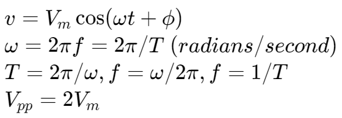
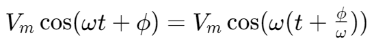
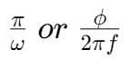
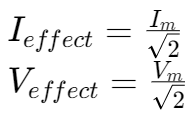
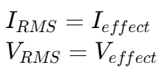
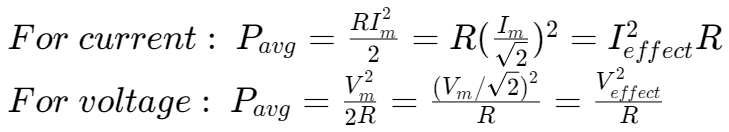
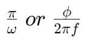

交流电路导入 | AC (sinusoidal) currents and voltages
余弦波形 | Sinusoidal Signals

余弦波的相变 | The Phase of a Sinusoidal

相当于相比原函数向左位移了  seconds。
注意：
使用弧度制单位！
交流电路的平均功率
交流电路中的有效电流和有效电压：

root-mean-square(RMS) 电流和电压：

交流电路的平均功率（对于电阻）：

相当于相比原函数向左位移了  seconds。
注意：
交流电路中的有效电流和有效电压：
root-mean-square(RMS) 电流和电压：
交流电路的平均功率（对于电阻）：